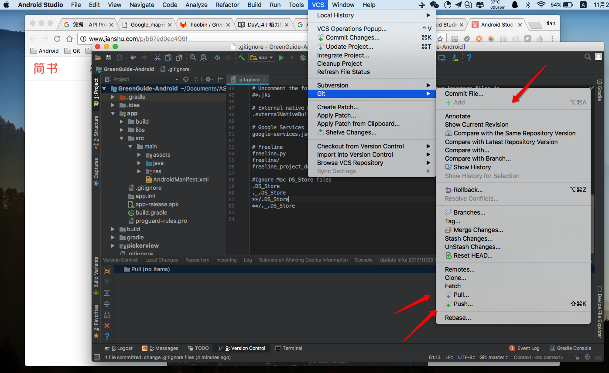

GitLab仓库远程合并
0.Git 常用的命令
1.添加全局忽略命令
2.Android Studio
0.Git 常用的命令
- 1.命令可以让你查看现有的配置
#git config --list
credential.helper=osxkeychain
user.name=tiacaeng
user.email=swufwn@163.com
core.autocrlf=input
core.repositoryformatversion=0
core.filemode=true
core.bare=false
core.logallrefupdates=true
core.ignorecase=true
core.precomposeunicode=true
remote.origin.url=git@code.xlink.cn:hoobin/GreenGuide-Android.git
remote.origin.fetch=+refs/heads/*:refs/remotes/origin/*
branch.master.remote=origin
branch.master.merge=refs/heads/master
- 2.查看分支的合并情况
git log --graph --pretty=oneline --abbrev-commit
1.添加全局忽略命令
- 1.创建
~/.gitignore_global文件，并写入所需的忽略命令
$ pwd
/Users/tianzeng
$ touch .gitignore_global
$ open .gitignore_global
or
echo ".DS_Store" >> ~/.gitignore_global
echo "._.DS_Store" >> ~/.gitignore_global
echo "**/.DS_Store" >> ~/.gitignore_global
echo "**/._.DS_Store" >> ~/.gitignore_global
git config --global core.excludesfile ~/.gitignore_global
$ cat .gitignore_global
*/.DS_Store
- 2.再 ~/.gitconfig 中引入 .gitignore_global 文件,(我的用户名是 tianzeng ,所以下面就写 tianzeng )
$ cat .gitignore_global
*/.DS_Store
$ cat .gitconfig
[user]
name = tianzeng
email = wyzjtian@163.com
[core]
autocrlf = input
$ git config --global core.excludesfile /Users/tianzeng/.gitignore_global
$ cat .gitconfig
[user]
name = tianzeng
email = sjdosdj@163.com
[core]
autocrlf = input
excludesfile = /Users/myname/.gitignore_global
- 3.验证是否生效.
2.Android Studio
Android Studio Git : http://www.jianshu.com/p/b67ed0ec496f
- 0.查看分支
$ git branch
* master
- 1.查看远程库的信息
$ git remote -v
origin git@github.com:michaelliao/learngit.git (fetch)
origin git@github.com:michaelliao/learngit.git (push)
- 2.拉取远程仓库的项目下来
git pull
- 3.推送到指定的分支
git push origin master
- 4.相关截图 